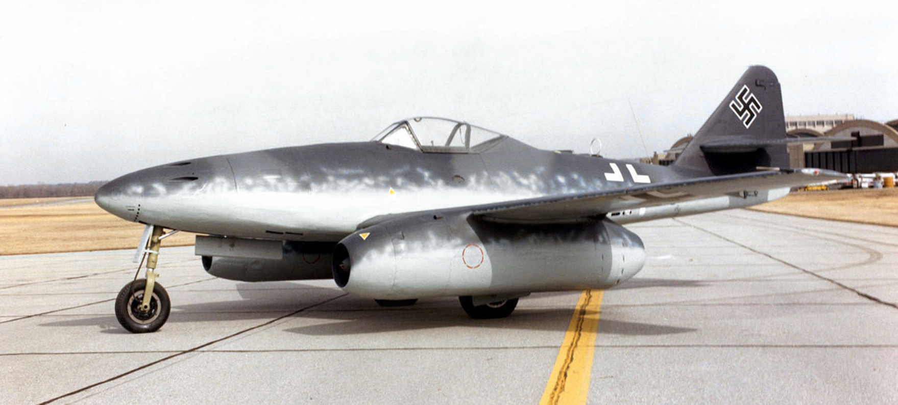
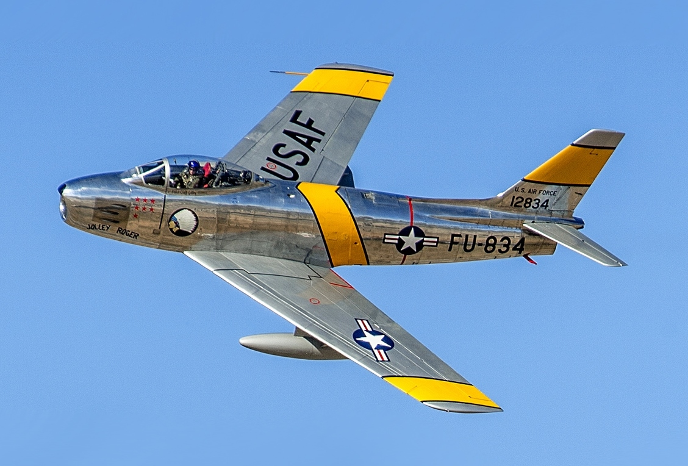
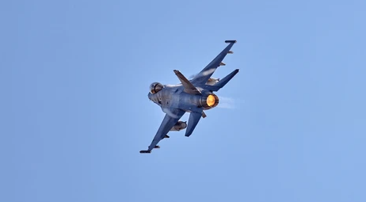
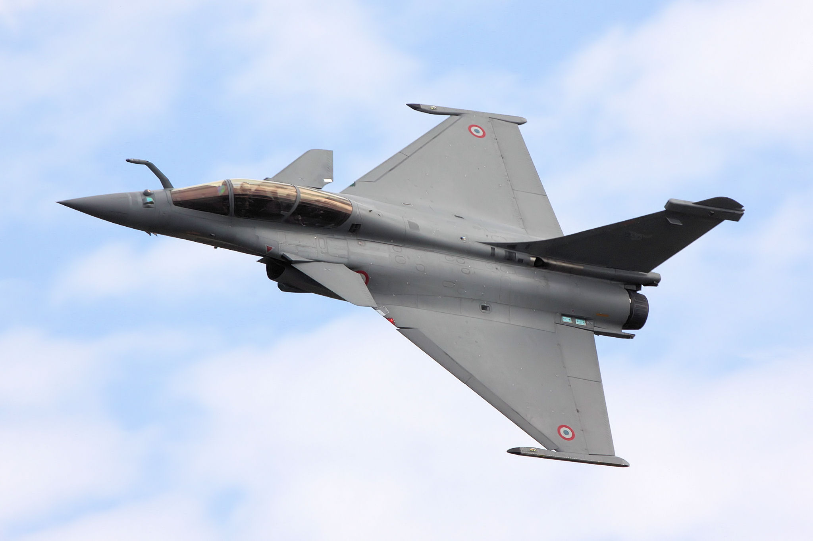
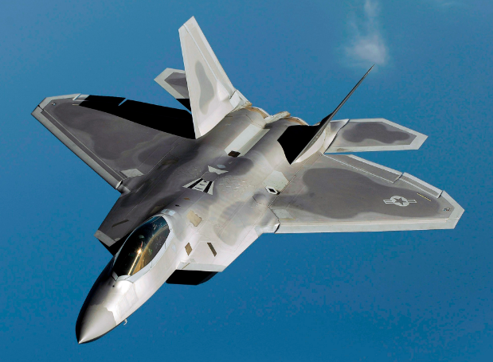

ARCHIVES DÉCLASSIFIÉES : LES 5 GÉNÉRATIONS
Messerschmitt Me 262
Le premier avion de chasse opérationnel à moteur à réaction. Il a bouleversé les tactiques de la fin de la Seconde Guerre mondiale avec sa vitesse fulgurante, rendant les avions à hélice obsolètes.

F-86 Sabre / MiG-15
Caractérisés par des ailes en flèche, des radars rudimentaires et des vitesses transsoniques. La Guerre de Corée fut le théâtre des premiers combats rapprochés (dogfights) entre jets.

F-4 Phantom II
L'ère de la vitesse brute (Mach 2) et de l'introduction massive des missiles air-air guidés par radar. On pensait à tort que le canon n'était plus nécessaire pour le combat aérien.

F-16 Fighting Falcon
Retour à l'agilité extrême grâce aux commandes de vol électriques (Fly-by-wire). Ces chasseurs multirôles sont devenus la colonne vertébrale des forces aériennes modernes.

Dassault Rafale / Typhoon
L'apogée des chasseurs non-furtifs. Introduction des radars AESA surpuissants, de la fusion de données et d'une réduction de la signature radar (furtivité passive). Des avions omnirôles.

F-22 Raptor / F-35
Le summum actuel. La furtivité totale (formes géométriques, matériaux absorbants) est intégrée dès la conception. Invisibles aux radars ennemis tout en ayant une vue parfaite du champ de bataille.
